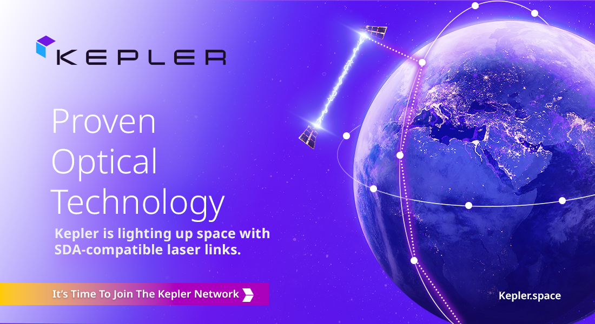

Top News Of Bangladesh
| Category | Hading | Date |
|---|---|---|
|
The area of the Bangladesh part of the Sundarbans is 6,517 square kilometers. The Sundarbans of Bangladesh consists of parts of Khulna, Satkhira, Bagerhat, Patuakhali and Barguna districts. |
Bangladesh is famous for the Sundarbans,the world's largest mangrove forest | Sundarbans was recognized as a UNESCO World Heritage Site on December 6, 1997 |
| Chittagong Division is famous for business | Shipping Location The Port of Chittagong is one of the busiest ports in South Asia and handles over 70% of Bangladesh's export-import trade. exjample, Chittagong Port Agent | The modern Chittagong port was organized in 1887 under the Port Commissioners Act in the British Indian Empire |
| technology of iPhone | iPhone 16 Pro Apple Intelligence |
Apple introduced the Lisa in 1983 and the Macintosh in 1984, as some of the first computers to use a |
Global diplomacy Friendship towards all, malice towards none
Bangladesh’s emergence in the multilateral world under the leadership of Bangabandhu
Multilateralism is an approach of international cooperation, wherein multiple states cooperate to resolve problems and focus on common objectives, highlighting equality, inclusivity, and mutual respect. Under Bangabandhu Sheikh Mujibur Rahman’s leadership, Bangladesh’s multilateralism flourished, marking a watershed moment in its advancement.
What to expect after applying
After you submit your application, a Licensing Supervisor (LS) will visit your business to verify the information you provided. Once the inspection is complete, you'll need to pay the fee and collect your trade license.
How much does it cost?
The cost of a trade license depends on the type of business and the local government. You'll also need to pay a signboard fee, which is usually 30% of the license fee
How long does it last?
A trade license is valid for one year and needs to be renewed annually.
How to get a trade license
You can apply for a trade license from the local government office where your business will be located. You can find the application form on the local government office's website
What documents to submit
You'll need to submit the following documents with your application:
- Incorporation certificate or registration letter
- Memorandum of association
- Proof of address, such as a rental deed or landownership document
- Three attested copies of your photo
- Copy of your national ID card or passport
The Internet technology has helped design a large number of websites to facilitate social relations among people around the world. These are known as social networking services or social networks or social media. At present, Facebook is the most popular social media site. Google+, Twitter, LinkedIn. etc. are other frequently used social services. Social network services are web-based and hence, provide ways for the users to interact through the Internet. These services make it possible to connect people sharing interests and activities across the borders and thus have made the users feel that they really live in a global village.
Why are social networks expanding so fast? The answer is simple. Most of the social services are cost- free. You can make use of them free, paying a very little to your Internet service provider. Secondly, you can make your personal profile public before the entire online community. It is like presenting yourself before the entire world. You can also look into other people's profile if you are interested. It is simple and easy. Thirdly, social networks allow users to upload pictures, multimedia contents and modify the profile. Some services like Facebook allow users to update their profiles. Fourthly. networks allow users to post blog entries. User profiles have a section dedicated to comments from friends and other users. Finally, there are privacy protection measures too. A user himself or herself decides over the number of visitors/viewers, and what information should be shared with others.
Choose the correct answer from the following alternatives
The Internet technology has helped — sites to emerge.
Created: 1 year ago | Updated: 1 year ago
Related Question
'He converted to Christianity as a young man, much to the ire of his family. Here the word 'ire' means ------------
The main purpose of the author of this passage is ----------
'A precious child with a gift of literary talent,' Here the expression means a child ---------------
Michael Madhusudan Dutt was frustrated because of his --------------------
His teachers appreciated his literary talents in ---------------------
indicates Michael's higher level of intellectual ability best.
Blue Origin launches ninth crewed New Shepard suborbital mission

Blue Origin flew six people, including a pair of repeat customers and a science communicator, on the latest New Shepard suborbital spaceflight mission Nov. 22.
Commercial Space Transformer Series
In this episode of Commercial Space Transformers we speak with Mike Greenley, CEO, MDA Space.